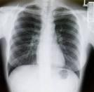

What do you know about how the doctor gets this picture for diagnosis? Have you ever asked how the sun produces light and heat? What science enbled man to explode the atomic bomb about which you so often hear? How do they diagnose ailments due to malfunctioning of thyroid glands using radioactive tracers? How is power generated in Kalpakkam nuclear plant? The underlying science presupposes knowledge of Radioactivity. This section presents just one aspect of this science known as Nuclear Science that has an impact on our lives since Becquerel discovered radioactivity, viz., how do we detect and measure radioactivity.

Monitoring and measuring radioactivity became imperative even during the early development of nuclear physics and radiochemistry to characterize the vast number of radioactive newly discovered isotopes with respect to the nature of radiations emitted, their energies, and half-lives. Rutherford and his coworkers succeeded in developing counters exploiting the ionizing nature of the principal radiations α,β,γ and x-rays. These counters are used even today without many modifications.

- The students should become familiar with radioactive counting techniques using gas filled counters.
- They should be able to measure the plateau of a Geiger counter and fix the optimum voltage for measuring radioactive counts per unit time.
- They should be able to apply the statistical methods for reporting errors while quoting errors in count rates.

The common radiation detectors make use of the electric conductivity of a gas resulting from the ionization produced in it. The gas counter consists of a suitable chamber containing usually an inert gas such as argon at atmospheric pressure, a central electrode in the form of a wire and a thin end-window. The central electrode is kept at a positive potential (anode) and the chamber at negative potential (cathode). When a potential is applied between the electrodes the gas is ionized. The positively charged heavy ions move towards the walls of the container. The electrons move towards the anode. The ionization current can be measured by a suitable electronic circuit or can be be digitalized and measured as counts per minute. As we increase the applied voltage across the electrodes initially there will be no current till the threshold voltage for ionization is reached. There on the current starts increasing slowly at the early stage as the ions have a tendency to recombine till a sufficiently high potential is applied. The negatively charged electrons move swiftly towards the central anode and the heavy positive ions move relatively at a slower speed to the cathode. This does not seriously impair measurements as the applied potential relatively low. Further increase in the potential shows a plateau over a region of about 100 volts. In this region the output current remains steady as all atoms interacting with radioactive emissions get ionized. This region is known as the “saturation current region”. The current produced is a direct measure of the rate of production of charged ions. Among the three radiations α, β, and γ, the alpha particle has a short range as it has large mass and charge. Consequently this region is most sensitive to α particles and other radiations contribute very little. As the applied potential is quite low the current produced is small and requires good amplification. To eliminate any absorption of radiation by air and window material the radioactive source is kept inside the chamber itself.
After a certain increase in the applied voltage the output signal rises almost linearly and shows resolution in the output depending on the energies of the incoming radiations. The higher energy emissions lead to signals with higher pulse heights due to the larger ionization caused by them and also higher amplification as well. This can be observed nicely by observing the output in an oscilloscope. In case we are interested in getting the energy spectrum we use a discriminator or single channel analyzer to provide a window which will allow emissions of only certain pulse heights and the rest can be filtered off. A plot between pulse height and count rate gives the pulse height spectrum and the radiation of interest can be selected by fixing the window from the pulse height spectrum. The output however requires amplification to register the signal as counts per minute. This region where the signal output shows proportionality to energy with gradual increase in slope can extend up to 100volts and is referred to as the proportional region. The counters operated in this region are called proportional counters. Unlike in the case of the ionization chamber the radioactive source can be conveniently mounted outside the counter and allowed to enter through a thin end window made of low atomic mass elements such as Be, Al, boron nitride (BN) or mica. Proportional counters are less efficient for α particle and most efficient for β, low energy x-rays and gamma rays


 Experiments
Experiments Feedback
Feedback